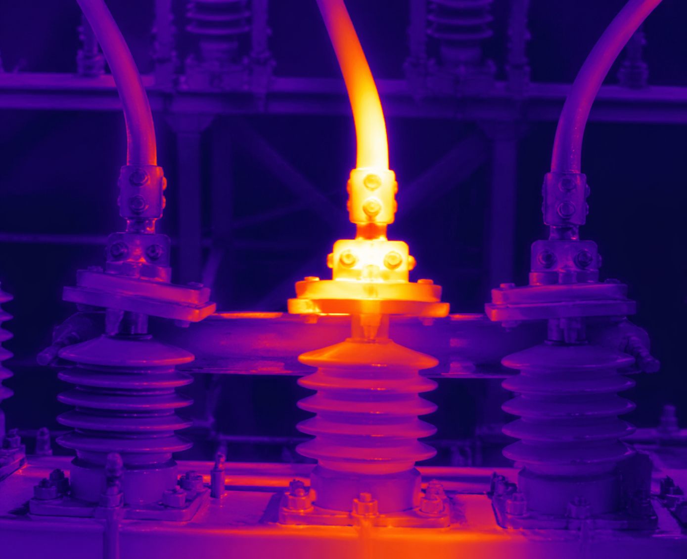

Continuous coverage
Routes run on schedule across yards, perimeters, equipment lanes, and hard-to-staff areas.
SMR Defense deploys and runs robotic fleets for infrastructure sites where staffing, inspections, and documentation cannot keep up with the requirement.
Power demand, AI infrastructure, distributed energy, and tighter compliance requirements are forcing operators to monitor more assets, more often, with better proof. Most site assets still sit between checks. Failures are found after they happen. Security and O&M records live in separate systems. SMR Defense changes that with continuous coverage, unified documentation, and predictive escalation.
Routes run on schedule across yards, perimeters, equipment lanes, and hard-to-staff areas.
Security, inspection, and maintenance evidence lands in one consistent site record.
Thermal, visual, and route exceptions are flagged before they become outages or findings.
Ground robots, aerial drones, and fixed sensors work from the same coverage requirement: more frequent checks, better evidence, and fewer blind spots between manual rounds.
The site gets the right mix of ground, air, and fixed sensing against the routes and assets that need proof.
Ground robots run documented routes through lanes, stairs, gravel, wet concrete, and equipment corridors that are too irregular for fixed cameras and too frequent for manual walkdowns.
Drones extend coverage to rooftops, fence lines, overhead equipment, cooling systems, and wide yards when speed, angle, or distance makes ground inspection too slow.
Your team receives documented patrols, inspection findings, and escalations with context. SMR Defense runs the routes, maintains the equipment, and keeps coverage moving without adding robot operators to your headcount.
Walk the requirement: assets, routes, blind spots, documentation needs, and escalation rules.
Place the right ground, air, and fixed assets against the routes your site needs covered.
Run patrols and inspections on schedule, with exceptions reviewed and routed to the right owner.
Deliver records your security, compliance, facilities, and maintenance teams can use.
Before SMR Defense, coverage is split across staffing, inspection contractors, security vendors, manual reporting, and rising insurance pressure. After deployment, one annual subscription per site covers patrol, inspection, escalation, and documentation.
Continuous patrol and inspection coverage usually means adding people, shifts, supervision, and management overhead before coverage approaches the requirement.
Separate vendors create separate budgets, separate handoffs, and separate records when the site needs one view of what happened.
Large portions of the site sit between checks while insurance pressure rises and the evidence needed to support risk conversations remains incomplete.
A fixed annual subscription consolidates coverage and documentation, with real-time measurement and verification data to support insurance conversations.

Thermal anomalies are flagged before they become outages. Physical changes are logged before they become compliance findings. Repeat exceptions are tracked across time instead of rediscovered on the next manual round.
Your team should not manage three separate tools. SMR Defense gives the site one coverage view, one escalation stream, and one audit trail across patrol, inspection, and monitoring activity.
Infrastructure operators already live with deployment discipline, data handling rules, access controls, and audit expectations. SMR Defense fits into that environment from the start.
Deployment can support on-premises or private-cloud handling when the site cannot send operational records through open public systems.
Supply chain posture, including domestic-first sourcing where required, is handled as part of deployment planning rather than after approval.
Routes, inspections, exceptions, and escalations are timestamped so teams can show what happened without rebuilding the record by hand.
Role-based access and controlled remote operations support sensitive workflows, including NERC CIP-style review where relevant.
SMR Defense fits sites where the monitoring requirement has outgrown the available people, vendor structure, and reporting process.
Substations, switching yards, and generation sites where inspection frequency, perimeter coverage, and outage prevention all matter.
Campuses where uptime pressure, physical security, power infrastructure, and audit documentation land on the same operations team.
Large facilities with wide perimeters, hard-to-reach equipment, and inspection routes that cannot be checked often enough by manual rounds.
Sensitive sites where coverage records, access controls, sourcing posture, and response discipline need to hold up under review.
Share the footprint, assets, routes, documentation requirement, and current coverage model. We will show how continuous coverage maps against your requirement.